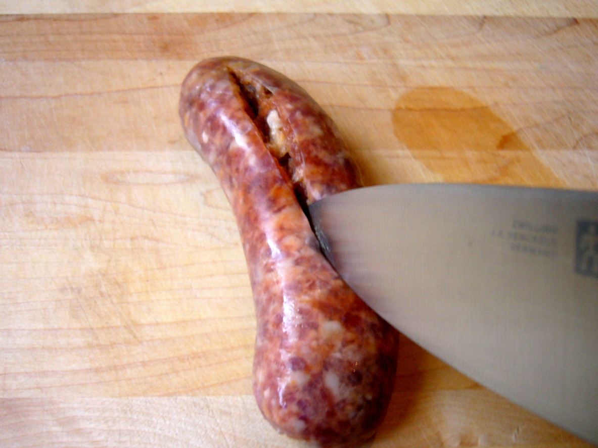
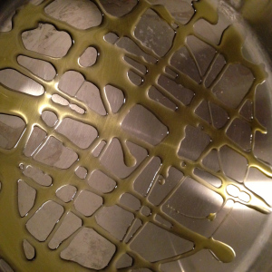
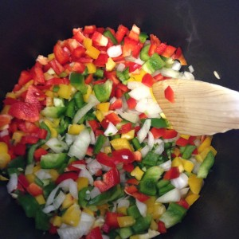
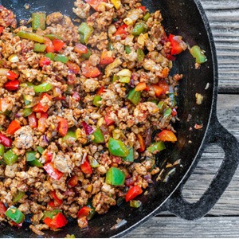
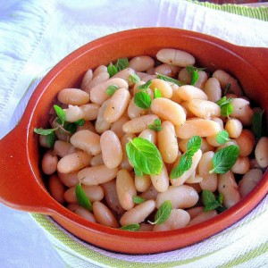
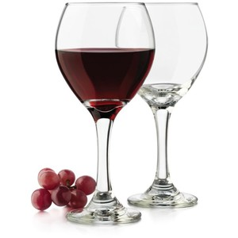

Savory Italian sausage and beans combine for a quick and easy weeknight meal. If you're lucky, you'll have some leftovers for next day's lunch.
| Preparation | |||
|---|---|---|---|
|  | 1. Remove casings from sausage. |  | 2. Heat a large nonstick skillet coated with olive oil over medium-high heat. |
|  | 3. Add bell pepper, onion, and garlic; sauté 3 minutes. |  | 4. Add sausage, and cook 8 minutes, or until browned, stirring to crumble. |
|  | 5. Stir in the beans, oregano, and remaining ingredients; reduce heat to medium-low. |  | 6. Cook 5 minutes or until thoroughly heated. Pair with red wine. |